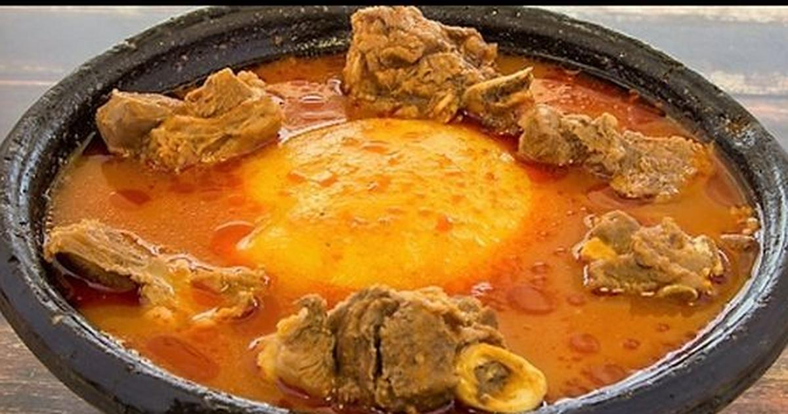

Fufu

Description
Fufu is a pounded meal in
West African Cuisine. It is a Twi word that originates from the Akans in Ghana. It is normally soft and
stretchy with a bland taste but it can also feel gummy depending on individual preferences.
Although different ingredients are used by different people, the main ingredients used in Ghana
are cassava and plantain or yams. The cassava and unripe plantain are peeled and boiled together.
They are then pounded separately with traditional wooden mortar and pestle or blended with a fufu
blending machine.
When the cassava and plantain are well mashed, they are mixed together. The homogeneous mixture is then
rolled into sizable balls and served with soup or sauce. In Ghana, it is mostly serve with
light (pepper) soup. Yet it can also be served with goundnut soup, palm nut soup or ebunuebunu
(a local green vegetable soup). Fufu is regularly eaten by hand. One has to tear off a small,
bite-sized ball which is then dipped in soup, stew or sauce.
Ingredients
5 Servings
- 300 g (10 1/2 oz) un-ripened plantain
- 460 g (16 oz) cassava
- 100 ml (6 tbsp + 2 tsp) water for steaming
- 500 ml (2 cups) water for blending while pounding
Steps
Cassava and Plantain Fufu
-
First, peel the plantain with a knife and cut it into cubes.
Peel and scrape the cassava, de-string it and also cut into cubes.
- Place the cassava and plantain into a saucepan, add 100ml of water,
cover the pan and boil the content under medium heat for 20 minutes or more
depending on how hard the cassava is.
-
While the cassava and plantain boils, wash the mortar and pestle.
-
When they are well cooked, strain off the water and leave the ingredients to cool to a
temperature comfortable enough to hold with the hand.
-
Pound the plantain and cassava separately with the mortar and pestle into a fine sticky paste,
eliminating lumps as they form.
-
Mix the pounded cassava and plantain together with gentle pounding until a homogeneous mixture
of the two components called fufu is formed.
-
Roll the fufu into sizable balls.
-
Serve fufu with your favourite soup. Mine is Groundnut soup!